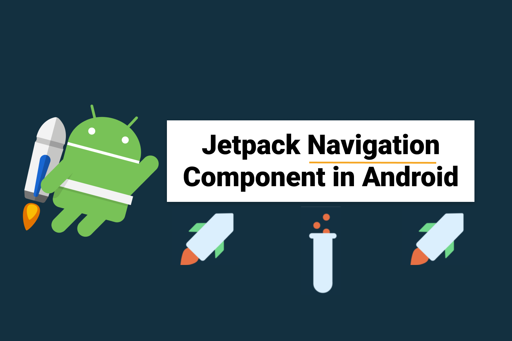

Android Jetpack - Navigation 组件：进行应用程序导航

一. Navigation 组件的介绍
1.1 什么是 Navigation 组件
- Navigation 组件是一种 Android Jetpack 库，它可以帮助开发者轻松地实现应用程序中的导航功能。导航组件包含多个类和组件，包括导航图、目的地、导航控制器等，可以帮助我们管理应用程序中的页面导航和任务导航。通过使用 Navigation 组件，我们可以更加方便地实现应用程序的导航功能，同时也可以提高应用程序的用户体验。在本篇文章中，我们将介绍如何使用 Navigation 组件来实现应用程序导航，并提供一些示例和更多的扩展功能。
1.2 Navigation 组件的优势
- Navigation 组件可以轻松实现应用程序中的导航，包括页面之间的转换和应用程序内部的导航。
- Navigation 组件可以提高应用程序的可维护性和可扩展性，因为它们使得应用程序的结构更加清晰，并且可以更容易地添加新的功能和页面。
- Navigation 组件可以提供一致的用户体验，因为它们使用了标准的导航模式和动画效果。
- Navigation 组件可以帮助开发人员更快地构建应用程序，因为它们提供了许多常见的导航模式和功能，可以直接使用或进行修改。
- Navigation 组件可以提高应用程序的可测试性，因为它们使得页面之间的导航和状态转换更加明确和可控。
1.3 Navigation 组件主要由3个部分组成：
- NavHost：用来嵌入导航流程的容器,一般使用
FragmentContainerView。 - NavController：负责在
NavHost内部处理导航事务的控制器，用于执行页面跳转、管理返回栈等。 - NavGraph：描述
Fragment之间导航关系的资源文件，在其中定义页面之间的转跳、动画等。一般放在res/navigation/目录下。
简而言之，Navigation组件通过在NavHost中使用NavGraph来描述Fragment导航路径与关系，然后由NavController来执行实际的导航工作，这样极大地简化了以往的页面跳转逻辑和回退栈管理流程。
二. Navigation 组件的基本使用
2.1 添加导航组件到项目中
- 在项目的 build.gradle 文件中添加以下依赖：
1 | |
- 在布局文件中添加 NavHostFragment：
1 | |
- 正确获取 NavController 对象 ：
在 Activity 内使用 NavController 时,应在onCreate()中获取:
1 | |
而在 Fragment 内,应在onAttach()或onViewCreate()中获取:
1 | |
NavHost需要指定app:navGraph属性来关联一个导航图NavGraph，这决定了其中Fragment页面之间的导航关系和跳转路径。
NavController是 Navigation组件的控制中心，用于在NavHost内执行导航操作。可以在Activity或Fragment中通过NavHostFragment的navController属性获取对应的NavController实例。
常见的导航操作有:
- 导航到目标目的地：
navController.navigate(R.id.destination_id) - 回退一个目的地：
navController.navigateUp()或navController.popBackStack() - 回退到根目的地：
navController.popBackStack(R.id.root_destination, false)
NavController还负责维护Fragment的回退栈，以及在按返回按钮时正确出栈，这大大简化了之前管理Fragment事务的复杂度。
通过NavHost和NavController的配合，Navigation组件实现了在NavGraph中声明的导航逻辑和页面切换功能。这使Fragment之间的导航变得极为简单高效。开发者只需关注于定义NavGraph，并调用NavController中的导航方法即可实现页面跳转,其余的一切尽在Navigation组件的掌控之中。
2.2 创建导航图
在XML文件中创建导航图：
1
2
3
4
5
6<androidx.fragment.app.FragmentContainerView
android:id="@+id/nav_host_fragment"
android:name="androidx.navigation.fragment.NavHostFragment"
android:layout_width="match_parent"
android:layout_height="match_parent"
app:navGraph="@navigation/nav_graph" />在res文件夹下创建一个
navigation文件夹，然后在该文件夹下创建一个nav_graph.xml文件，用于定义导航图的结构和内容：1
2
3
4
5
6
7
8
9
10
11
12
13
14
15
16
17
18
19
20
21
22
23<navigation xmlns:android="http://schemas.android.com/apk/res/android"
xmlns:app="http://schemas.android.com/apk/res-auto"
xmlns:tools="http://schemas.android.com/tools"
android:id="@+id/nav_graph"
app:startDestination="@id/firstFragment">
<fragment
android:id="@+id/firstFragment"
android:name="com.smallmarker.jetpackpractice.navigation.fragment.FirstFragment"
android:label="First"
tools:layout="@layout/fragment_first">
<action
android:id="@+id/action_firstFragment_to_secondFragment"
app:destination="@+id/secondFragment" />
</fragment>
<fragment
android:id="@+id/secondFragment"
android:name="com.smallmarker.jetpackpractice.navigation.fragment.SecondFragment"
android:label="Second"
tools:layout="@layout/fragment_second" />
</navigation>
在导航图中，<fragment> 元素用于定义目的地，android:id属性用于指定目的地的唯一标识符，android:name 属性用于指定目的地的类名，android:label 属性用于指定目的地在应用程序中显示的标签名称。
<action> 元素用于定义动作，android:id 属性用于指定动作的唯一标识符，app:destination 属性用于指定动作要执行的目的地。
三. Navigation 组件的高级使用
3.1 深层链接
在 Android 中，深层链接是指将用户直接转到应用内特定目的地的链接。借助 Navigation 组件，您可以创建两种不同类型的深层链接：显式深层链接和隐式深层链接。
- 创建显式深层链接：
显式深层链接是深层链接的一个实例，该实例使用 PendingIntent 将用户转到应用内的特定位置。例如，您可以在通知或应用 widget 中显示显式深层链接。
1 | |
该示例使用 NavDeepLinkBuilder 类构造 PendingIntent, 添加到通知中并发送，点击通知跳转指定页面。
- 创建隐式深层链接：
1 | |
如需启用隐式深层链接，您还必须向应用的 manifest.xml 文件中添加内容。将一个 <nav-graph> 元素添加到指向现有导航图的 activity，如以下示例所示。
1 | |
在这个例子中，我们定义了一个深度链接，它的 URI 是"example://deepLink/{id}"，其中{itemId}是一个参数。当用户在浏览器或其他应用中点击这个链接时，Android 系统会自动打开我们的应用，并跳转到对应的页面，同时将参数传递给我们的应用。我们可以在目标页面中通过arguments来获取这个参数。
3.2 共享元素转场
- 共享元素转场可以实现在不同
Activity或Fragment之间共享相同元素的动画效果，比如在列表页面点击某个item进入详情页面时，可以让这个item的图片或文字在两个页面之间平滑地过渡。以下是一个简单的实现示例：
1 | |
- 到 Fragment 目的地的共享元素过渡
1 | |
- 到 Activity 目的地的共享元素过渡
1 | |
共享元素以程序化方式提供，而不是通过导航 XML 文件提供。activity 和 fragment 目的地各自都有 Navigator.Extras 接口的一个子类，它接受导航的附加选项，包括共享元素。您可以在调用 navigate() 时传递这些 Extras。
3.3 导航图的动态构建- 动态构建导航图可以在运行时根据不同的条件创建不同的导航图，例如用户登录状态不同、权限不同等情况下展示不同的导航结构。
- 下面是一个简单的动态构建导航图的示例：
1 | |
在上面的示例中，我们首先获取到了当前的NavController和NavInflater，然后通过NavInflater.inflate方法来加载我们的动态导航图。接着，我们根据不同的条件设置了导航图的起始目的地，并且在有管理员权限的情况下动态添加了一个目的地，并且添加了一条边来连接这个目的地和主页。最后，我们将构建好的导航图设置到NavController中即可。
四. 导航组件的最佳实践
4.1 使用<include>标签
- 为每个模块定义单独的
NavGraph在大型项目中,最好为每个功能模块定义自己的NavGraph,然后在根NavGraph中使用<include>标签将每个模块的NavGraph组合起来:：
1 | |
4.1 使用 ViewModel 和 LiveData
- 在 ViewModel 中使用 LiveData 对象来处理导航事件：
1 | |
- 在 Fragment 中观察 LiveData 对象并处理导航事件：
1 | |
注意这里我们使用了 Safe Args 实现类型安全的导航，在目的地之间导航，官方也是建议使用 Safe Args Gradle 插件。此插件可生成简单的对象和构建器类，以便在目的地之间实现类型安全的导航。我们强烈建议您在导航以及在目的地之间传递数据时使用 Safe Args。
如需将 Safe Args 添加到您的项目，请在顶层 build.gradle 文件中包含以下 classpath：
1 | |
然后再将以下行添加到应用或模块的 build.gradle 文件中：
1 | |
五. 总结
5.1 导航组件的优势和适用场景：
| 优势 | 适用场景 |
|---|---|
| 1. 提供一致的导航体验 | 适用于需要在应用中引入多个页面的场景 |
| 2. 简化导航逻辑 | 适用于需要在应用中进行复杂的导航操作的场景 |
| 3. 可自定义外观和行为 | 适用于需要根据应用需求自定义导航栏的场景 |
| 4. 支持深层链接 | 适用于需要在应用中支持深层链接的场景 |
5.2 导航组件的最佳实践- 在使用导航组件时，应该尽量减少手动操作 Fragment 事务，而是使用导航组件提供的 API 进行操作，以避免出现不必要的错误。
- 在设计导航图时，应该尽量将功能相似的页面放在同一个导航图中，以便于管理和维护。
- 在使用 Safe Args 插件传递参数时，应该尽量使用安全的类型，以避免出现类型转换错误。
以上就是对 Android Navigation 的探索与实践的过程，上述示例 + 扩展（结合 BottomNavigationView 和 DrawerLayout）请参考 https://github.com/smallmarker/JetPackPractice